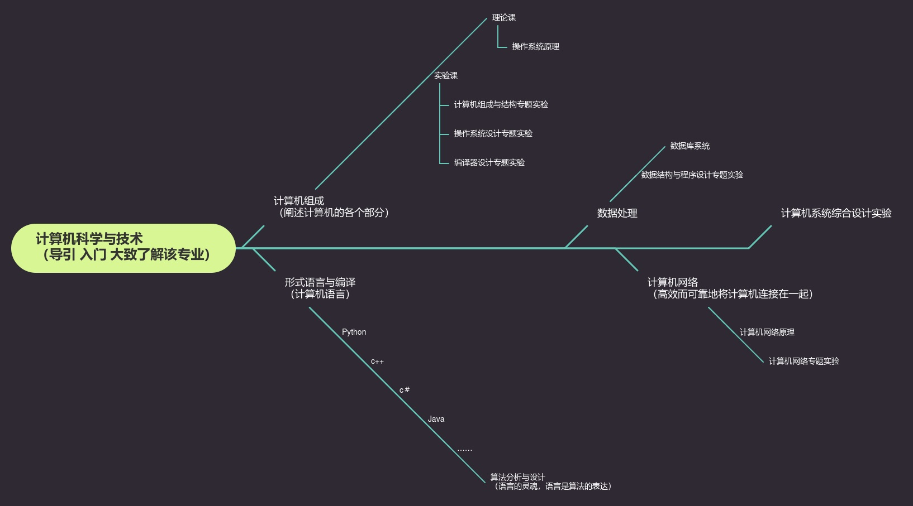

（部分课程设置了超链接，也可以直接文件夹里面打开相应课程的文件哦）
计算机作为二十世纪最伟大的发明之一是当今世界以及人们生活不可缺少的一部分，甚至可以说已经是人类社会的一部分。而计算机专业自然是学习这伟大发明的专业。因为计算机的伟大，自然也不可避免地为计算机行业带来了巨量的红利。虽然新兴产业在不断兴起，但是由于计算机的不可缺少性以及本科教育的基础化，计算机专业也具有很好的兼容性，可以有相当宽广的发展方向。
其实很简单，就是好好学习。
1--计划考入钱班，省下考研的时间；如果不能考入钱班依旧好好学习，希望能够拿到保研名额；再不济的话就考研咯，多努力一年；总之不管怎么样，我都会热情的应对，说实话对我来说没有计划这种东西，就是思考好了瞄准一个方向往前冲，撞到墙了，就换个方向继续。
2--现在加入了自旋电子材料中心，在做测试项目，希望能够在本科积累一些经验，也希望能有一个不一样一些的大学四年。
3--计划选择自动化或者计算机这样的热门专业进行学习，同时条件允许的话继续进行自旋电子中心的科研。但是同时进行两个不同专业的学习我怕我力不从心，所以专业一事依旧待定。